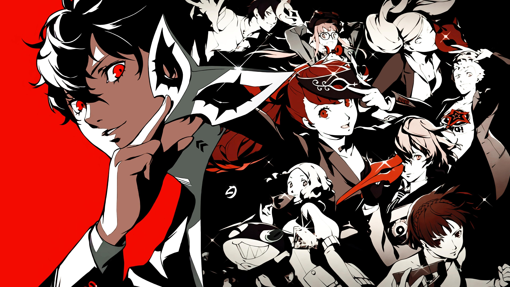

TURN-BASED COMBAT
Use Personas and clever strategies to defeat enemies.
THE PHANTOM THIEVES ARE BACK
Change the world. Steal hearts. Live an unforgettable story. A stylish adventure where every choice matters.

READ MY REVIEWPersona 5 Royal is a Japanese role-playing game developed by Atlus. You play as a student who secretly becomes the leader of the Phantom Thieves. Together with your friends, you explore mysterious worlds called Palaces and fight to change the hearts of corrupt people.
Persona 5 Royal combines strategic battles, exploration and everyday student life.
Use Personas and clever strategies to defeat enemies.
Discover hidden secrets inside imaginative dungeons.
Build friendships, study and explore Tokyo.
Persona 5 Royal stands out because of its unforgettable characters, incredible music and unique visual style. Its story is emotional, exciting and full of surprises.